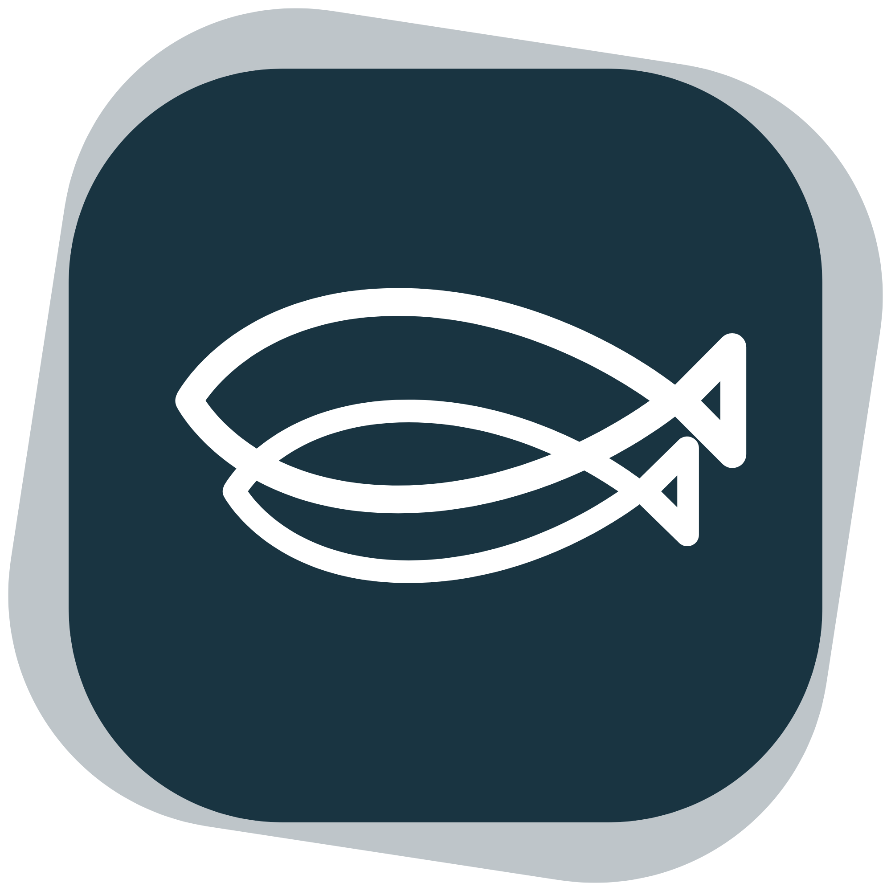
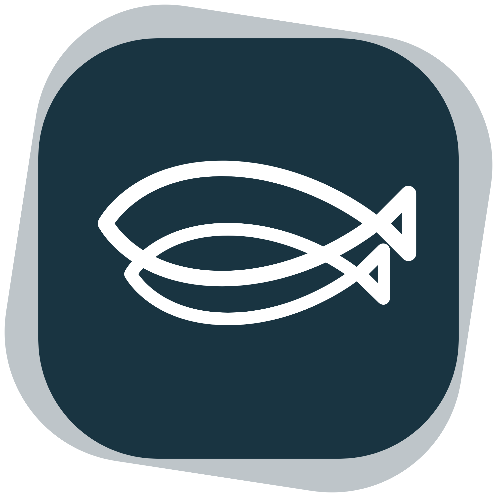

Olá, nós somos a DuoFish
Empresa de Consultoria Ambiental
Sempre buscando as melhores soluções!
Empresa de Consultoria Ambiental
Sempre buscando as melhores soluções!



Seja bem-vindo(a) à DuoFish! A empresa surgiu com o intuito de atuar não só com a prestação de serviços de consultoria ambiental na região que conta com o maior porto da América Latina (Porto de Santos), mas também dedicada ao desenvolvimento de uma rotina operacional de acompanhamento da qualidade e alimento seguro para o pescado artesanal. Orientados pela abordagem ‘one health’, através da agregação de valor e do incentivo à transparência, sustentabilidade e segurança alimentar, atuamos com a coleta e obtenção de amostras biológicas e ambientais, para caracterizar a qualidade do ambiente, da biota aquática e principalmente do pescado oriundo da frota artesanal ofertado enquanto alimento na Baixada Santista. O pescado artesanal é um produto nutricionalmente valioso da nossa cultura, economia e saber tradicional, mas enfrenta desafios relacionados à qualidade e práticas inadequadas ao longo da cadeia produtiva como um todo. Nossas ações caminham lado a lado com o monitoramento da qualidade ambiental, agregação de valor ao pescado de origem artesanal, às atividades dos pescadores, hábito dos consumidores e de saúde pública.
Years Of Experiences
Completed Projects
Happy Clients